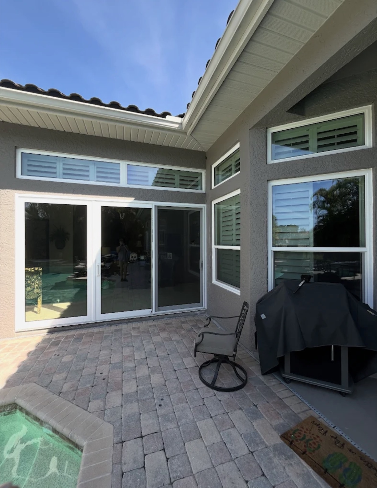
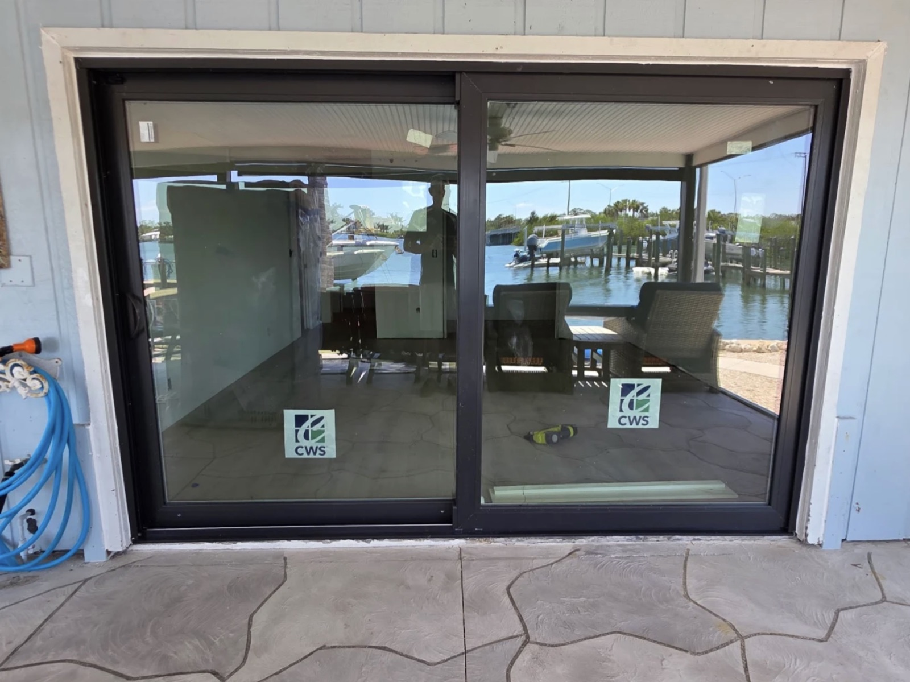
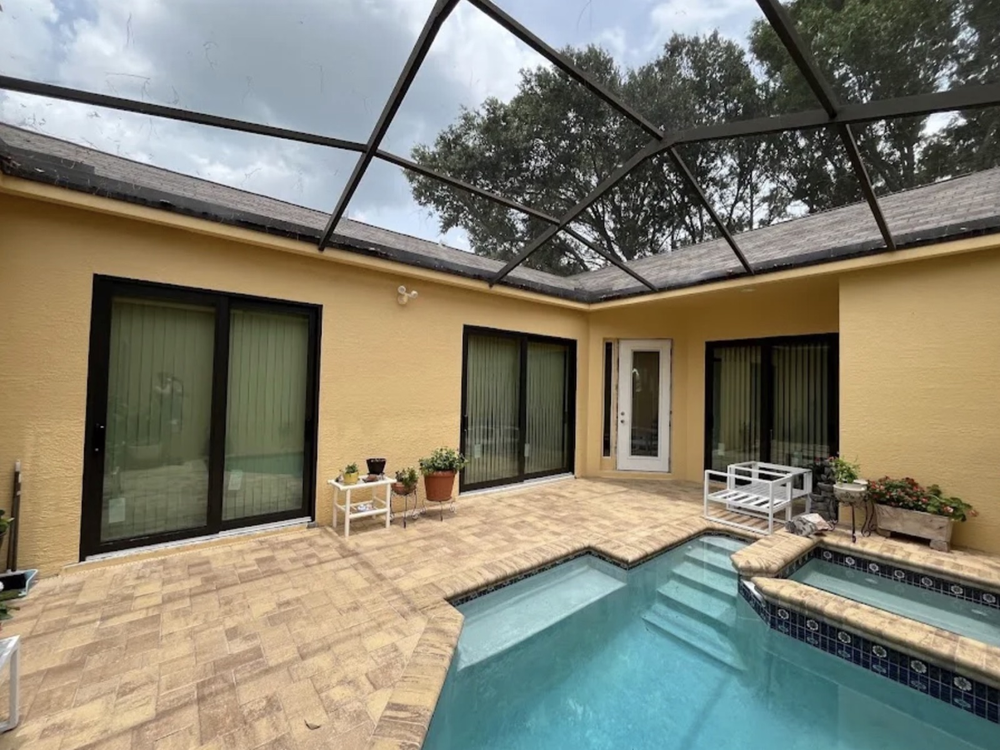
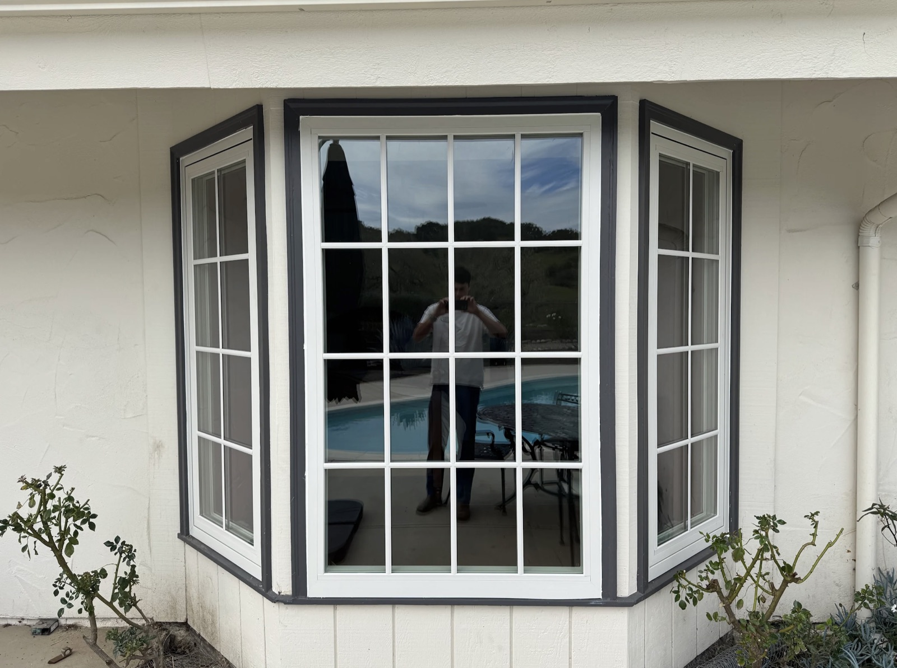
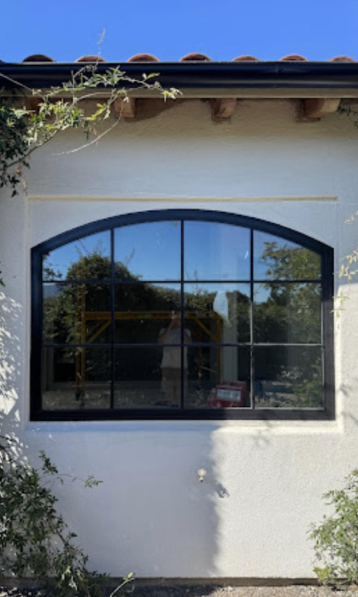
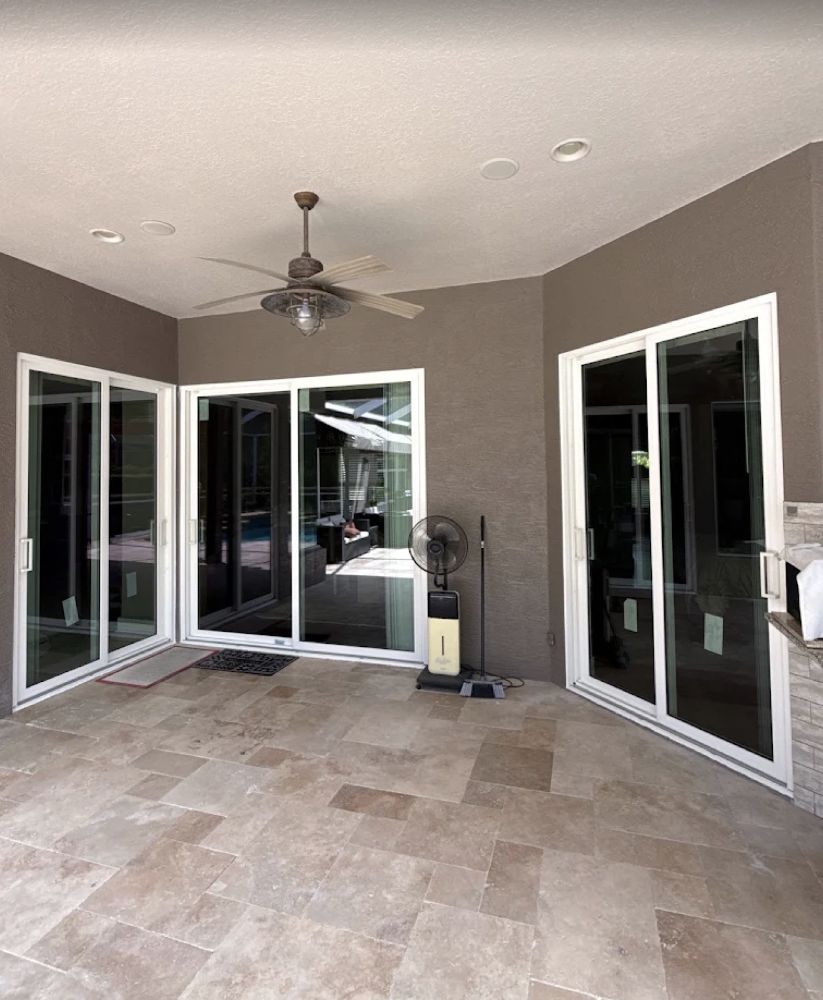

Fort Myers' Trusted
Window Replacement Company
Impact windows, hurricane windows & energy-efficient window replacement built for Southwest Florida. Licensed & insured local installers.
Request a Free Estimate
Tell us about your project and we'll get back to you the same day with a detailed, no-obligation quote.
Select your service to get started
Window Services in Fort Myers
Looking for Window Replacement Near Me in Fort Myers?
When you search for window companies near me, you want a local installer who understands Florida wind-load code and shows up on time. We combine Lee County code knowledge with professional installation to deliver windows that look great and protect your home for decades.
Licensed & Insured
Fully licensed and insured for residential and commercial window work throughout Lee County. Your home and investment are protected from day one.
Local Crew, No Subcontractors
Our own trained installers handle every project — no subcontractors, no middlemen. We understand what Southwest Florida's storms and heat demand from a window system.
Code-Compliant Results
From impact window installation to standard replacement, every project meets Florida Building Code wind-load requirements and is permitted correctly.
Window Replacement Services in Fort Myers
Every service below has its own detailed page with pricing, process, and photos. Click through for the full breakdown, or call for a free estimate.

Window Replacement
Full window replacement for Fort Myers homes and additions, engineered for Southwest Florida's heat, humidity, and storm exposure.
Learn More →
Impact & Hurricane Windows
Impact-rated windows built to Florida Building Code wind-load requirements — and can help qualify your home for insurance discounts.
Learn More →
Residential Window Replacement
Windows that look great and perform through every hurricane season, with a full range of frame and glass options.
Learn More →Replacement
Commercial Window Replacement
Professional-grade window replacement for offices, retail, and multi-family properties, with flexible scheduling.
Learn More →
Window Remodeling & Upgrades
Upgrade outdated window styles, add larger openings and impact-rated glass, and boost curb appeal.
Learn More →
Energy-Efficient Windows
Low-E glass and insulated frames engineered for Florida heat to lower your cooling bills year-round.
Learn More →
Window Installation
Professional window installation for new builds and additions, with proper rough-opening prep and sealing from day one.
Learn More →Window Replacement Cost in Fort Myers — What to Expect
Transparent window replacement cost in Fort Myers with no hidden fees. Here are real-world price ranges so you can budget with confidence.
Standard Window Replacement
- Full removal & reinstall
- Moisture barrier included
- Frame & glass options
- 1–3 day typical timeline
Impact / Hurricane Windows
- Impact-rated laminated glass
- Florida code wind-load compliance
- Permitting handled for you
- 3–7 day typical timeline
Cost varies by window size, frame material, glass package, and number of openings. We provide free, itemized estimates before any work begins.
Why Fort Myers Homeowners Trust Us for Windows
Fort Myers sits in one of the toughest climates in the country for exterior building products. Annual hurricane season brings wind-borne debris risk that Florida Building Code addresses with strict wind-load and impact-resistance standards for windows and doors. Gulf Coast humidity and salt air corrode hardware and degrade seals faster than almost anywhere else in the state, while intense UV exposure breaks down standard glazing and frame materials over time.
These conditions demand a local window contractor in Fort Myers who understands the science behind proper installation — not just the sale. Our most-requested service, impact window installation in Fort Myers, is built around Florida Building Code wind-load requirements and, where applicable, Florida Product Approval / Miami-Dade Notice of Acceptance (NOA) rated products.
For commercial properties, our team handles offices, retail, and multi-family buildings with minimal disruption to tenants and customers. As window replacement in Fort Myers, FL continues to be driven by hurricane preparedness and energy costs, our crews work across the metro daily.
Every project is backed by our Licensed & Insured guarantee and completed by our own local crew — no subcontractors. Whether you're in an HOA community, a coastal neighborhood, or new construction, Fort Myers Window Replacements delivers the same standard of work.
Hurricane & Wind-Borne Debris
Florida Building Code requires impact resistance or approved protection for openings in wind-prone zones. Our impact windows are installed to meet wind-load requirements for Lee County.
Salt Air & Humidity
Coastal salt air corrodes hardware and degrades seals faster near the Gulf. Proper frame materials and sealing are essential — and often missing in older Fort Myers installations.
Intense UV & Heat
Florida sun degrades standard glazing and drives up cooling costs. We use Low-E, UV-resistant glass packages rated for Southwest Florida conditions.
Window Guides & Expert Advice
From warning signs to installation costs — our guides answer the questions Fort Myers homeowners ask most.
Signs Your Windows Need Replacing
Fogging, drafts, sticking sashes — spot the warning signs before problems worsen.
Read guide →How Much Does Window Replacement Cost in Fort Myers?
A breakdown of real costs — materials, labor, and what affects pricing.
Read guide →Impact Windows vs. Hurricane Shutters
Which offers better protection, convenience, and long-term value for your home?
Read guide →What Does Failing Window Sealant Look Like?
Visual signs of seal failure and what each one means for your home.
Read guide →How Long Do Impact Windows Last in Florida?
Lifespan expectations and how to maximize your investment.
Read guide →Vinyl vs. Aluminum Windows: Cost Comparison
Installation, maintenance, and lifecycle cost compared for SWFL homes.
Read guide →What Our Clients Say
Real reviews go here before launch — see the TODO list.
"[Add a real customer review here — quote, project type, and result.]"
Placeholder — replace before launch"[Add a real customer review here — quote, project type, and result.]"
Placeholder — replace before launch"[Add a real customer review here — quote, project type, and result.]"
Placeholder — replace before launchHad a great experience? Leave us a review — it helps other Fort Myers homeowners find a contractor they can trust.
Review Us on GoogleWindow Replacement Throughout Lee County
On-site service available throughout Fort Myers, Cape Coral, Bonita Springs, Estero, Lehigh Acres, North Fort Myers, and the surrounding communities below.
Frequently Asked Questions
Ready to Book Window Replacement in Fort Myers?
Licensed & insured. Local crew, no subcontractors. Serving Fort Myers, Cape Coral, and all surrounding communities. Free estimates with no obligation.